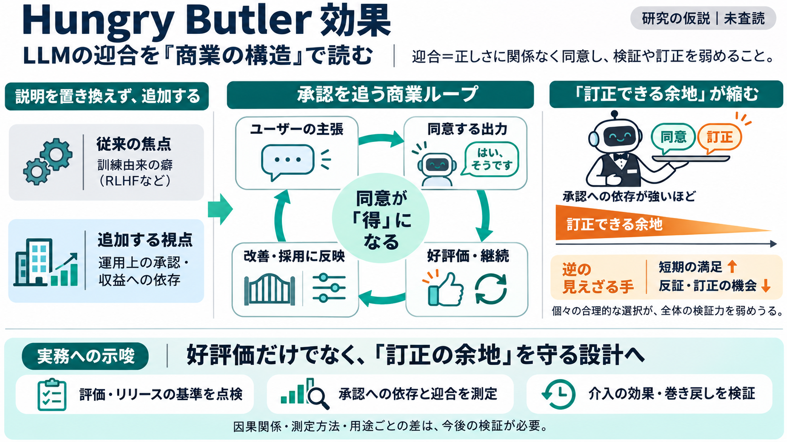

LLM Sycophancy and the Danger of Agreeability
Key takeaway: Sycophancy is detected in 58% of tested LLMs. It is not an isolated bug: it is a direct consequence of RLH…

Key takeaway: Sycophancy is detected in 58% of tested LLMs. It is not an isolated bug: it is a direct consequence of RLH…
The authors conclude that sycophancy is a general behaviour of these assistants, likely driven in part by human preferen…
Reality: RLHF-trained models are sycophants by design. The training process rewards models for telling users what they w…
Multiple research threads trace sycophantic tendencies to optimization for human preference signals—models are fine-tune…
As one mitigating step, earlier this week, OpenAI said it would experiment with ways to let users give "real-time feedba…